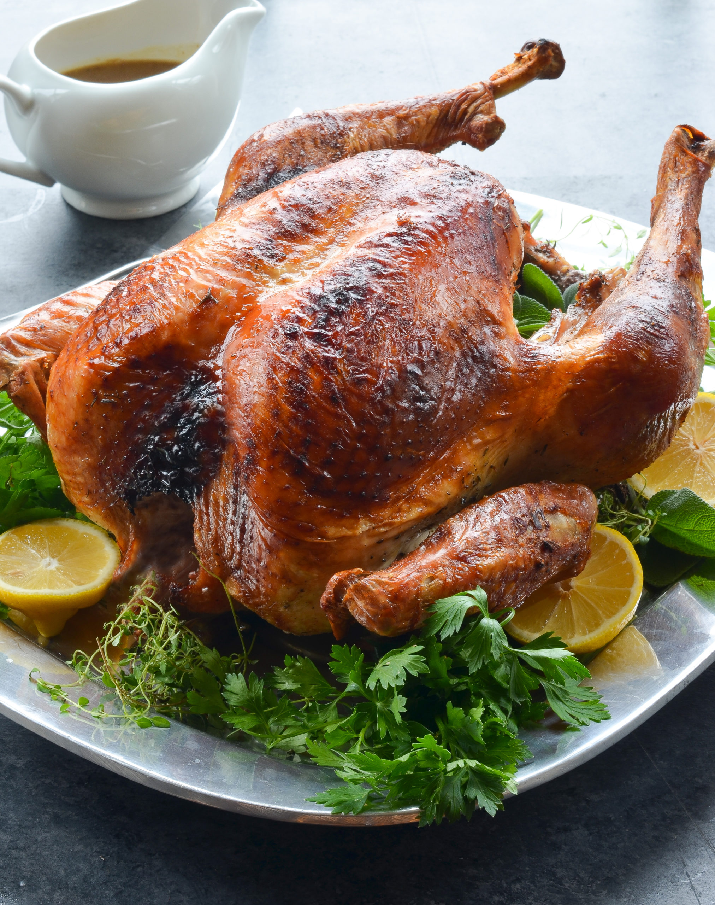

Turkey

Descriptipm
Turkey meat, commonly referred to as just turkey,
is the meat from turkeys, typically domesticated turkeys but also wild turkeys
It is a popular poultry dish, especially in North America, where it is traditionally
consumed as part of culturally significant events such as Thanksgiving and Christmas,
as well as in standard cuisine.
Ingredients
- 1 (10 pound) whole turkey
- ½ cup olive oil
- 1 tablespoon salt
- 1 tablespoon chopped fresh sage
- 1 tablespoon fresh thyme leaves
- 1 tablespoon finely chopped fresh rosemary
- 1 teaspoon crushed black pepper
Steps
-
Preheat oven to 350 degrees F (175 degrees C). Place a roasting rack on a baking
sheet.
-
Turn the turkey over, breast-side down. Using a pair of sharp heavy-duty kitchen
shears, cut along one side of the backbone. Repeat on the other side of the backbone.
Reserve the backbone for making turkey stock for gravy. Press firmly down onto both
sides of turkey to flatten.
-
Tuck the wing tips under the turkey and place on the roasting rack. Pat skin dry and
rub olive oil over the entire turkey; season with salt, sage, thyme, rosemary, and
black pepper.
-
Bake in the preheated oven for 1 hour 30 minutes, rotating baking sheet every 30
minutes. Increase temperature to 400 degrees F (200 degrees C) and roast until skin
is crisp, about 15 minutes more. An instant-read thermometer inserted into the
thickest part of the thigh should read 165 degrees F (74 degrees C). Remove turkey
from the oven, cover loosely with a doubled sheet of aluminum foil, and allow to
rest for 10 to 15 minutes before slicing.